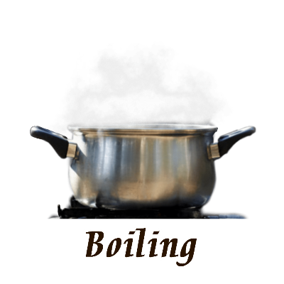

Boiling

Boiling water to remove unwanted germs is the oldest trick in the book. It’s extremely effective in eliminating microbiological contaminants from the water. It’s recommended to bring the water to a rolling boil for a minimum of 1 minute to purify it. At an altitude above 2,000 metres you should increase this to 3 minutes.
What does boiling water remove:
What doesn’t boiling water remove:
- Lead
- Debris
- Nitrates
- Pesticides
Advantages of boiling water:
- Very effective for removing organisms.
- No cost involved.
అవాంఛిత సూక్ష్మక్రిములను తొలగించడానికి వేడినీరు పుస్తకంలోని పురాతన ట్రిక్. నీటి నుండి మైక్రోబయోలాజికల్ కలుషితాలను తొలగించడంలో ఇది చాలా ప్రభావవంతంగా ఉంటుంది. నీటిని శుద్ధి చేయడానికి కనీసం 1 నిమిషం పాటు రోలింగ్ కాచుకు తీసుకురావాలని సిఫార్సు చేయబడింది. 2,000 మీటర్ల ఎత్తులో మీరు దీన్ని 3 నిమిషాలకు పెంచాలి.
వేడినీరు ఏమి తొలగిస్తుంది:
- బ్యాక్టీరియా
- వైరస్లు
- ప్రోటోజోవ
మరిగే నీటిని తొలగించనివి:
- సీసం
- శిధిలాలు
- నైట్రేట్లు
- పురుగుమందులు
వేడినీటి యొక్క ప్రయోజనాలు:
- హానికరమైన జీవులను తొలగించడానికి చాలా ప్రభావవంతంగా ఉంటుంది.
- ఎటువంటి ఖర్చు ఉండదు.